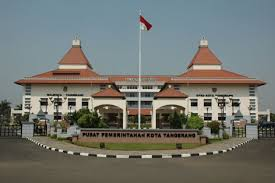

Sejarah
Untuk mengungkapkan asal usul tangerang sebagai kota "Benteng", diperlukan catatan yang menyangkut perjuangan. Menurut tulisan F. de Haan yang diambil dari arsip VOC, resolusi tanggal 1 Juni 1660 melaporkan bahwa Sultan Banten telah membuat negeri besar yang terletak di sebelah barat sungai Untung Jawa, dan untuk mengisi negeri baru tersebut Sultan Banten telah memindahkan 5.000 sampai 6.000 penduduk. Dalam Dag Register tertanggal 20 Desember 1668 diberitakan bahwa Sultan Banten telah mengangkat Raden Sena Pati dan Kyai Demang sebagai penguasa di daerah baru tersebut. Karena dicurigai akan merebut kerajaan, Raden Sena Pati dan Kyai Demang dipecat oleh Sultan. Sebagai gantinya diangkat Pangeran Dipati lainnya. Atas pemecatan tersebut Ki Demang sakit hati. Kemudian tindakan selanjutnya ia mengadu domba antara Banten dan VOC. Tetapi ia terbunuh di Kademangan. Dalam arsip VOC selanjutnya, yaitu dalam Dag Register tertanggal 4 Maret 1680 menjelaskan bahwa penguasa Tangerang pada waktu itu adalah Kyai Dipati Soera Dielaga. Kyai Soeradilaga dan putranya Subraja minta perlindungan VOC dengan diikuti 143 pengiring dan tentaranya (keterangan ini terdapat dalam Dag Register tanggal 2 Juli 1682). Ia dan pengiringnya ketika itu diberi tempat di sebelah timur sungai, berbatasan dengan pagar VOC. Ketika bertempur dengan Banten, Soeradilaga beserta ahli perangnya berhasil memukul mundur pasukan Banten. Atas jasa keunggulannya itu kemudian ia diberi gelar kehormatan Raden Aria Suryamanggala, sedangkan Pangerang Subraja diberi gelar Kyai Dipati Soetadilaga. Selanjutnya Raden Aria Soetadilaga diangkat menjadi Bupati Tangerang I dengan wilayah meliputi antara sungai Angke dan Cisadane. Gelar yang digunakannya adalah Aria Soetidilaga I.
Kemudian dengan perjanjian yang ditandatangani pada tanggal 17 April 1684, Tangerang menjadi daerah kekuasaan VOC. Banten tidak mempunyai hak untuk campur tangan dalam mengatur tata pemerintahan di Tangerang. Salah satu pasal dari perjanjian tersebut berbunyi: Dan harus diketahui dengan pasti sejauh mana batas-batas daerah kekuasaan yang sejak masa lalu telah dimaklumi maka akan tetap ditentukan yaitu daerah yang dibatasi oleh sungai Untung Jawa atau Tangerang dari pantai Laut Jawa hingga pegunungan-pegunungan sejauh aliran sungai tersebut dengan kelokan-kelokannya dan kemudian menurut garis lurus dari daerah Selatan hingga utara sampai Laut Selatan. Bahwa semua tanah disepanjang Untung Jawa atau Tangerang akan menjadi milik atau ditempati VOC. Dengan adanya perjanjian tersebut daerah kekuasaan bupati bertambah luas sampai sebelah barat sungai Tangerang. Untuk mengawasi Tangerang maka dipandang perlu menambah pos-pos penjagaan di sepanjang perbatasan sungai Tangerang, karena orang-orang Banten selalu melakukan penyerangan secara tiba-tiba. Menurut peta yang dibuat pada tahun 1692, pos yang paling tua terletak di muara sungai Mookervaart, tepatnya disebelah utara Kampung Baru. Namun kemudian ketika didirikan pos yang baru, bergeserlah letaknya ke sebelah Selatan atau tepatnya di muara sungai Tangerang.